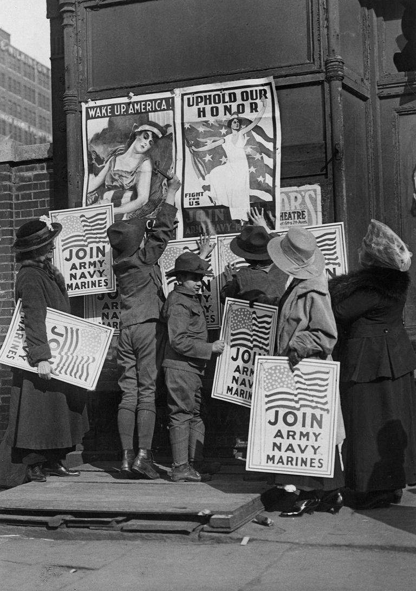
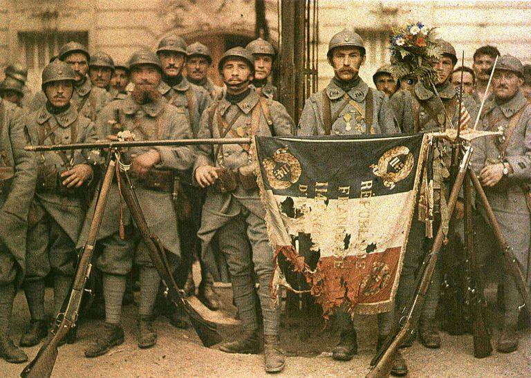

La Primera Guerra Mundial marcó el primer gran conflicto internacional del siglo XX. El asesinato del archiduque Francisco Fernando, heredero de la corona austro-húngara, y de su esposa, la archiduquesa Sofía, en Sarajevo el 28 de junio de 1914, dio inicio a las hostilidades, que comenzaron en agosto de 1914, y continuaron en varios frentes durante los cuatro años siguientes. Durante la Primera Guerra Mundial, las Potencias de la Entente -- Gran Bretaña, Francia, Serbia y la Rusia Imperial (a las que más tarde se unieron Italia, Grecia, Portugal, Rumania y Estados Unidos) -- lucharon contra las Potencias Centrales: Alemania y Austria-Hungría (a las que más tarde se incorporaron la Turquía Otomana y Bulgaria). El entusiasmo inicial de todas las partes respecto a una victoria rápida y decisiva se desvaneció cuando la guerra se empantanó en un punto muerto de costosas batallas y guerra de trincheras, particularmente en el frente occidental. El sistema de trincheras y fortificaciones en el oeste se extendió en su punto máximo a 475 millas (764 km), aproximadamente desde el Mar del Norte hasta la frontera suiza, y definieron la guerra para la mayoría de los combatientes norteamericanos y de Europa Occidental. La vasta extensión del frente oriental impedía una guerra de trincheras a gran escala, pero la escala del conflicto era equivalente a la del frente occidental. También hubo intensos combates en el norte de Italia, en los Balcanes y en la Turquía otomana. Los combates tuvieron lugar en el mar y, por primera vez, en el aire. En abril de 1917, se produjo un cambio decisivo en las hostilidades cuando la política de guerra submarina irrestricta de Alemania sacó a Estados Unidos del aislacionismo y lo llevó al centro del conflicto. Las nuevas tropas y el nuevo material de la Fuerza Expedicionaria Estadounidense (American Expeditionary Force, AEF) bajo el mando del General John J. Pershing, junto con el bloqueo en constante aumento de los puertos alemanes, a la larga ayudaron a cambiar el equilibrio del esfuerzo bélico a favor de la Entente.
 La causa inmediata que provocó el estallido de la primera guerra mundial fue el asesinato del archiduque de Austria-Hungría, Francisco Fernando, en Sarajevo, Serbia, el 28 de junio de 1914 por el nacionalista serbobosnio Gavrilo Princip. Austria presentó un ultimátum a Serbia y el 28 de julio de declaró la guerra. El sistema de alianzas militares creado en los años precedentes entró entonces en funcionamiento el 28 de julio, el conflicto dio comienzo con la invasión de Serbia por Austria-Hungría, seguida de la invasión de Bélgica, Luxemburgo y Francia por el Imperio alemán, y el ataque de Rusia contra Alemania.. Rusia ordenó la movilización de sus ejércitos contra Austria, por apoyo con sus hermanos eslavos. Alemania, aliada del imperio austro-húngaro, pidió a Rusiaue detuviera sus maniobras contra Francia, en la que se concentraría el máximo de fuerzas disponibles para lograr rápidamente una victoria que permitiera al ejército dirigirse contra Rusia. El plan fue ejecutado por el general Helmuth von Moltke, que dejó al ejército austríaco encargado de contener a los rusos en el frente oriental y dirigió la mayor parte de sus tropas contra Francia. El ejército francés, al mando del general Joseph-Jacques-Césaire Joffre, se dispuso a su vez a aplicar el plan XVII, contraataque centrado en el Marne dio como resultado un ultimátum de los Habsburgo al reino de Serbia. Las potencias europeas invocaron diversas alianzas formadas años y décadas atrás, por lo que sólo unas semanas después del magnicidio las grandes potencias estaban en guerra. A través de sus colonias, el conflicto pronto prendió por el mundo. La Primera Guerra Mundial tuvo diversas causas, pero sus raíces se encuentran en una compleja red de alianzas entre las potencias europeas. En esencia, fue la desconfianza entre —y la militarización de— la informal «Triple Entente» (Gran Bretaña, Francia y Rusia) y la secreta «Triple Alianza» (Alemania, el Imperio austrohúngaro e Italia). Los actores más poderosos, Gran Bretaña, Rusia y Alemania, gobernaban imperios coloniales mundiales que querían expandir y proteger.